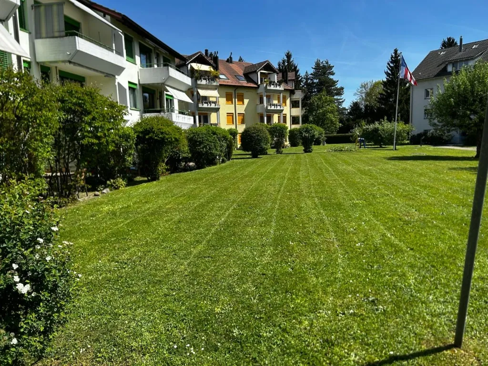
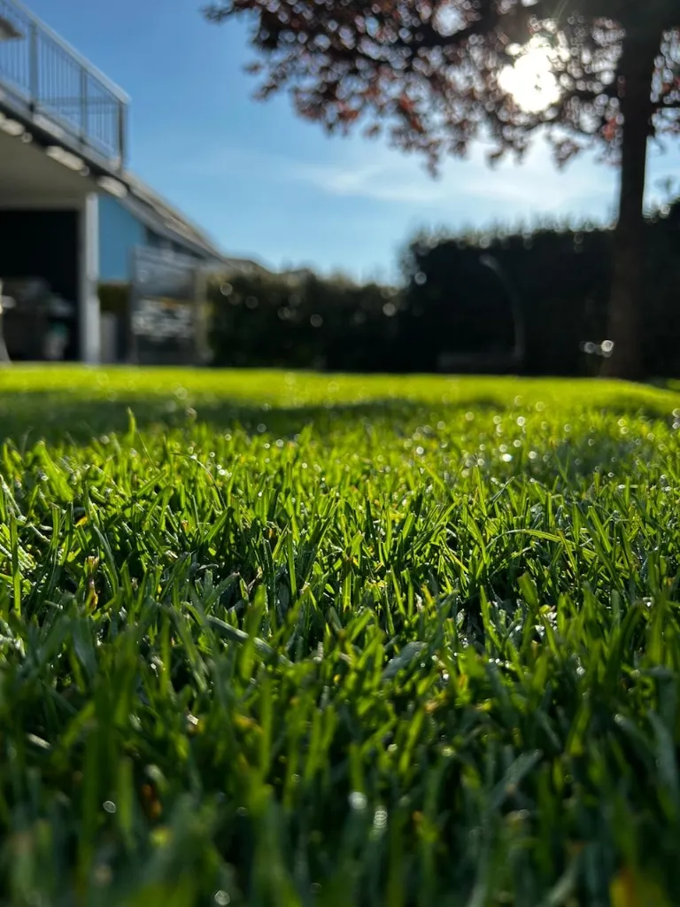
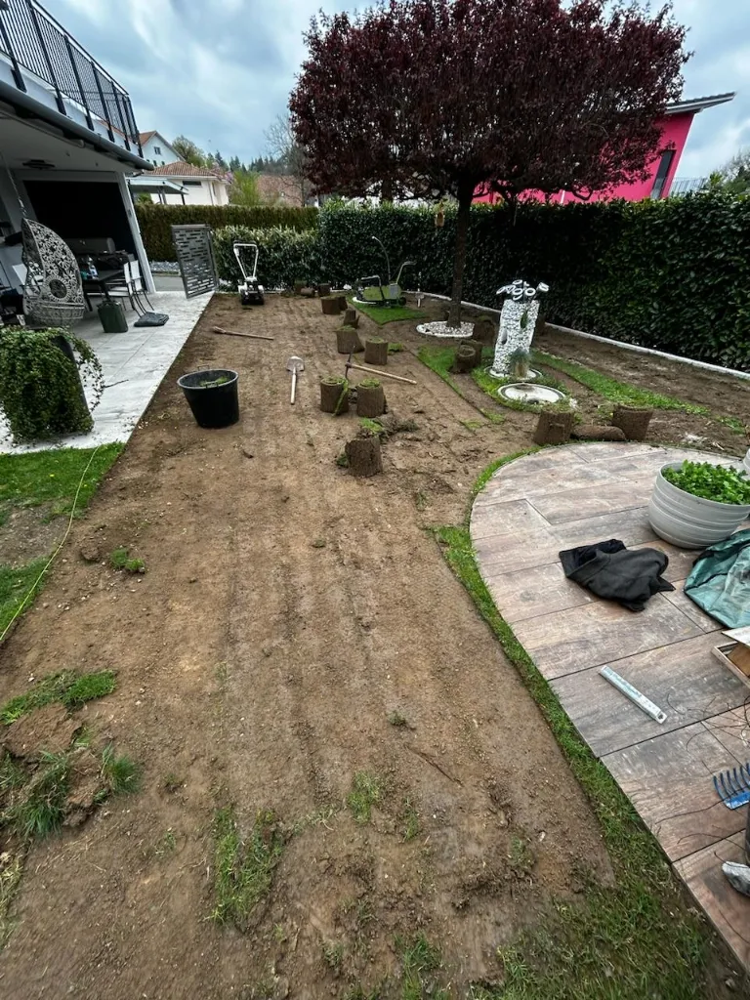
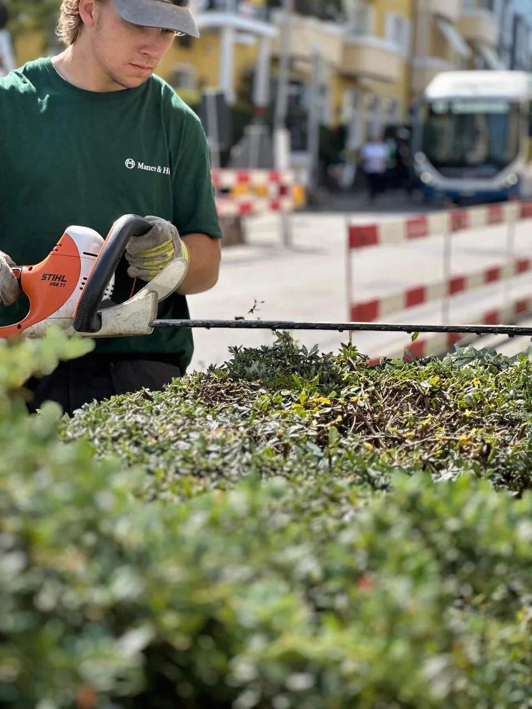
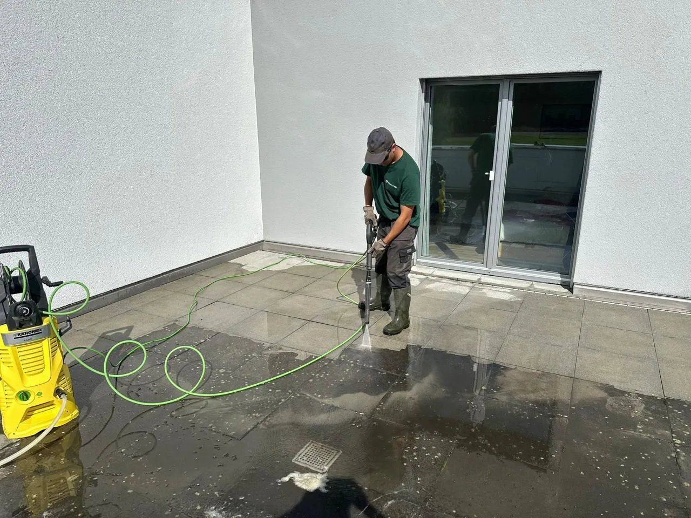

Professioneller Gartenservice - von der Planung bis zur Pflege
Wir bieten das komplette Leistungsspektrum für Ihren Aussenbereich: Liegenschaftsverwaltung, fachgerechte Bepflanzungen, präziser Heckenschnitt, professionelle Hochdruckreinigung und massgeschneiderte Unterhaltsplanung. Standort Buchs AG - im Einsatz im Kanton Aargau und Region.

Liegenschaftsverwaltung & Grünflächenpflege
Als zuverlässiger Partner für Liegenschaftsverwaltungen im Kanton Aargau übernehmen wir die komplette Betreuung Ihrer Aussenanlagen. Von der regelmässigen Rasenpflege über saisonale Arbeiten bis hin zu Gartenbau und Verkaufsaufbereitung - wir sorgen dafür, dass Ihre Liegenschaften jederzeit einen gepflegten Eindruck hinterlassen.
Unsere Leistungen sind speziell auf die Anforderungen von Verwaltungen, Stockwerkeigentümergemeinschaften und gewerblichen Immobilien zugeschnitten. Sie erhalten einen festen Ansprechpartner, transparente Rapportierung und planbare Kosten - monatlich oder per Saison.
- ✓ Gartenunterhalt: Rasen mähen, vertikutieren, Unkraut entfernen, Beete pflegen
- ✓ Saisonale Arbeiten: Frühjahrspflege, Sommerbewässerung, Laubbeseitigung
- ✓ Verkaufsaufbereitung: Garten und Aussenbereich optimal für Verkauf oder Neuvermietung herrichten
- ✓ Transparente Rapportierung: Fotodokumentation und Arbeitsberichte für Ihre Verwaltung
- ✓ Hartbeläge & Aussenanlagen: Erstellung und Reparatur von Plätzen, Wegen, Einfahrten, Treppen und Mauern
- ✓ Rasen & Erdarbeiten: Rollrasen verlegen, Terrain modellieren, Drainagen einbauen
Unterhaltsplanung & Gartenpflege-Abo
Kein Garten ist wie der andere. Deshalb erstellen wir für jede Anlage einen individuellen Pflegeplan, der auf Ihre Bedürfnisse, Ihr Budget und die spezifischen Standortbedingungen zugeschnitten ist. So bleibt Ihre Grünfläche das ganze Jahr über gepflegt und vital - ohne, dass Sie sich selbst darum kümmern müssen.
Unser Gartenpflege-Abonnement ist die bequemste Lösung für Privatkunden und Verwaltungen: ein fester monatlicher Betrag, planbare Besuche und ein Rundum-Sorglos-Paket, das alle saisonalen Arbeiten abdeckt. Von der Frühjahrskur im März bis zur Herbstvorbereitung im November.
- ✓ Individuelle Bedarfsanalyse: Wir analysieren Ihre Anlage und erstellen einen massgeschneiderten Pflegeplan
- ✓ Faire Pauschalpreise: Ab CHF 200.–/Monat - keine versteckten Kosten
- ✓ Saisonale Rundum-Pflege: Frühjahrskur, Sommerpflege, Herbstvorbereitung, Laubbeseitigung
- ✓ Flexibel kündbar: Monats- oder Saisonverträge, jederzeit anpassbar


Bepflanzungen & Bau
Ein schöner Garten beginnt mit der richtigen Pflanze am richtigen Ort - und dem passenden baulichen Fundament. Wir verbinden fachkundige Bepflanzung mit professionellem Gartenbau: von der Standortberatung über Erdarbeiten bis zur fertigen Aussenanlage.
Ob Neubepflanzung, Gartenumgestaltung oder die Erstellung von Hartbelägen und Wegen - wir übernehmen den gesamten Prozess. Dabei achten wir auf Sortenqualität, heimische Arten und langfristiges Gedeihen. Ergänzt durch solide Bauarbeiten entsteht ein Aussenbereich, der über Jahre hinweg Freude macht.
- ✓ Hartbeläge & Aussenanlagen: Erstellung und Reparatur von Plätzen, Wegen, Einfahrten, Treppen und Mauern
- ✓ Rasen & Erdarbeiten: Rollrasen verlegen, Terrain modellieren, Drainagen einbauen
- ✓ Ziersträucher & Gehölzpflanzungen: Einzelstellung, Gruppenpflanzung, Bodendecker
- ✓ Hecken & Sichtschutz: Thuja, Liguster, Hainbuche und weitere Arten
- ✓ Standortberatung & Nachpflanzung: Ersatz beschädigter oder abgestorbener Pflanzen
Heckenschnitt & Baumpflege
Gepflegte Hecken definieren den Charakter jedes Gartens. Unser professioneller Heckenschnitt mit Profigeräten sorgt für saubere Kanten, gleichmässige Form und gesundes Wachstum - egal ob Liguster, Thujahecke oder Hainbuche.
Neben dem klassischen Rückschnitt und Verjüngungsschnitt bieten wir auch Brachheckenpflege und die fachgerechte Pflege von Solitärgehölzen und Obstbäumen an. Der richtige Schnittzeitpunkt entscheidet über die Vitalität Ihrer Pflanzen - und wir wissen genau, wann welche Art geschnitten werden muss.
- ✓ Rückschnitt & Verjüngung: Fachgerechte Erneuerung überalterter und verwilderter Hecken
- ✓ Brachheckenpflege: Verwilderte Hecken wieder in Form bringen
- ✓ Obstbaumpflege: Erziehungsschnitt, Auslichtung, Totholzentfernung
- ✓ Kirschlorbeer entfernen: Fachgerechte Entfernung und Entsorgung invasiver Kirschlorbeer-Bestände
- ✓ Grünschnitt-Entsorgung: Komplette Beseitigung und umweltgerechte Entsorgung


Spezialarbeiten & Reinigung
Von der professionellen Hochdruckreinigung über Rodungsarbeiten bis zu maschinellen Mäharbeiten - wir übernehmen auch die Aufgaben, die über den klassischen Gartenunterhalt hinausgehen. Mit Kärcher-Geräten und professionellem Maschinenpark arbeiten wir effizient und gründlich.
Ob Moos auf der Terrasse, ein verwildertes Grundstück oder die fachgerechte Entsorgung von Grüngut - wir bieten die passende Lösung. Ideal als Frühjahrskur, vor dem Liegenschaftsverkauf oder für einmalige Spezialeinsätze.
- ✓ Hochdruckreinigung: Terrassen, Wege, Einfahrten, Fassaden - materialgerecht mit Kärcher
- ✓ Rodungen: Fachgerechte Rodung von Sträuchern, Bäumen und Wurzelstöcken
- ✓ Mäharbeiten: Grossflächiges Mähen mit professionellem Maschinenpark
- ✓ Entsorgungen: Fachgerechte Entsorgung von Grünschnitt, Erdmaterial und Gartenabfällen
Ihr Gartenservice im Aargau
Von unserem Standort in Buchs AG aus betreuen wir Gärten und Aussenanlagen im gesamten Kanton Aargau. Persönlicher Service, faire Preise und kurze Wege - direkt bei Ihnen vor Ort.
Was Sie über unseren Gartenservice wissen sollten
Lassen Sie uns über Ihren Garten sprechen.
Kostenlose Erstberatung vor Ort, transparente Offerte innerhalb einer Woche - ganz unverbindlich. Wir kommen zu Ihnen.